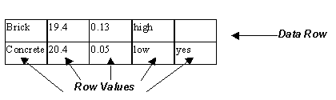
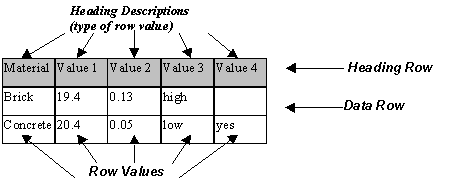

8.21.3.5 IfcTableRow
| Ligne de table |
| Tabellenzeile |
IfcTableRow contains data for a single row within an
IfcTable.
Limitation: For backward compatibility, all
IfcTableRow objects referenced by an IfcTable
shall have the same number of Row Cells. The actual number of
Cells shall be taken from the number of cells of the first
IfcTableRow for that table. The number of Cells is
calculated by the derived attribute NumberOfCellsInRow
in the associated IfcTable.
NOTE The attribute IsHeading exists for
backward compatibility. IfcTableColumn should be
used instead beginning with IFC4.
|

|
Figure 337 illustrates table row use.
|
|
Figure 337 — Table row use
|
|
|

|
Figure 338 depicts how table rows were structured prior
to IFC4 with the use of the IsHeading flag. Note
that the use of the IfcTableColumn constructs
should be used instead of the IsHeading flag
(which remains for backward compatibility only).
|
|
Figure 338 — Table row use alternative
|
|
HISTORY New entity in IFC1.5.
XSD Specification:
<xs:element name="IfcTableRow" type="ifc:IfcTableRow" substitutionGroup="ifc:Entity" nillable="true"/>
<xs:complexType name="IfcTableRow">
<xs:complexContent>
<xs:extension base="ifc:Entity">
<xs:sequence>
<xs:element name="RowCells" nillable="true" minOccurs="0">
<xs:complexType>
<xs:group ref="ifc:IfcValue" maxOccurs="unbounded"/>
<xs:attribute ref="ifc:itemType" fixed="ifc:IfcValue"/>
<xs:attribute ref="ifc:cType" fixed="list"/>
<xs:attribute ref="ifc:arraySize" use="optional"/>
</xs:complexType>
</xs:element>
</xs:sequence>
<xs:attribute name="IsHeading" type="xs:boolean" use="optional"/>
</xs:extension>
</xs:complexContent>
</xs:complexType>
EXPRESS Specification:
|
|
| RowCells | : | OPTIONAL LIST [1:?] OF IfcValue; |
| IsHeading | : | OPTIONAL BOOLEAN; |
|
 EXPRESS-G diagram
EXPRESS-G diagram
Attribute Definitions:
| RowCells | : | The data value of the table cell.. |
| IsHeading | : | Flag which identifies if the row is a heading row or a row which contains row values. NOTE - If the row is a heading, the flag takes the value = TRUE. |
| OfTable | : | Reference to the IfcTable, in which the IfcTableRow is defined (or contained). |
Inheritance Graph:
|
|
| RowCells | : | OPTIONAL LIST [1:?] OF IfcValue; |
| IsHeading | : | OPTIONAL BOOLEAN; |
|
 Link to this page
Link to this page